CannaCre8ive × Ideal Cannabis · 2020 — 2026
Ideal Cannabis
I shot the flower, shaped the story, and built the website and wholesale portal for an Oregon craft cultivator.
Read the storyMacro · Ideal Cannabis
Brands, systems & tools✦Portland, Oregon
Selected work, 2016 – 2026
I tend to be the first one in. The first hire at a startup dispensary, the operator who turns an idle press into a print shop, the person who builds the system a team ends up running on. Here are six of those stories.
01 / 06
01Brand, photography & web
Ideal grows craft flower in Oregon. Its owner, Troy Moore, co-founded Oregon's Finest, the state's first medical dispensary. The product was exceptional. Online, it looked like everyone else's.
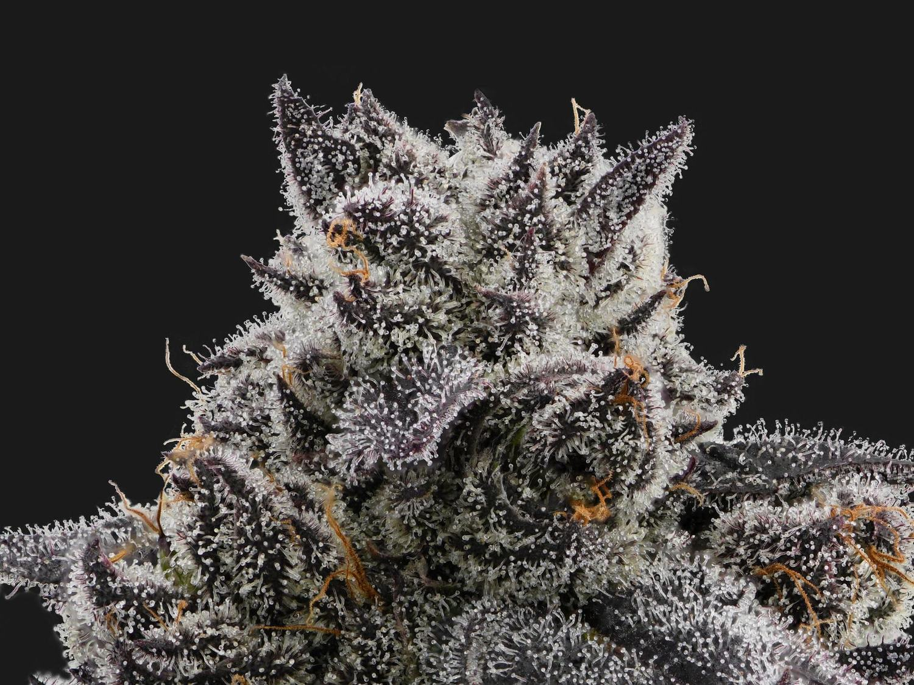
Craft flower sells on things a screen can't carry: smell, texture, the frost on a bud.
Most cannabis sites fill that gap with stock smoke and neon leaves, and that flattens a carefully grown product into a commodity. Ideal also had two audiences with different jobs. A shopper wants to find a strain they will enjoy. A dispensary buyer wants lineage, formats and a fast way to start an order. One homepage had to serve both without making either wade through the other's content.
I shot a macro library of Ideal's cultivars against black, lit for trichome detail and true color. The site uses dark surfaces, thin editorial type and generous image areas so each bud carries the page. Twenty-three of my photographs run through the experience.
Six cultivars, each with lineage, terpenes, aroma, flavor, effect and available formats. Consistent fields let a shopper compare and let a budtender teach from the page. Filters by cultivation method and type sit on top.
Retail discovery and wholesale inquiry get separate routes. Buyers land on a structured inquiry form with the details a farm needs to qualify an account.
The same strain data fed a B2B wholesale portal with buyer and seller views, accounts, orders and invoices. That portal became the base for a repeatable offer to small farms without their own retail.
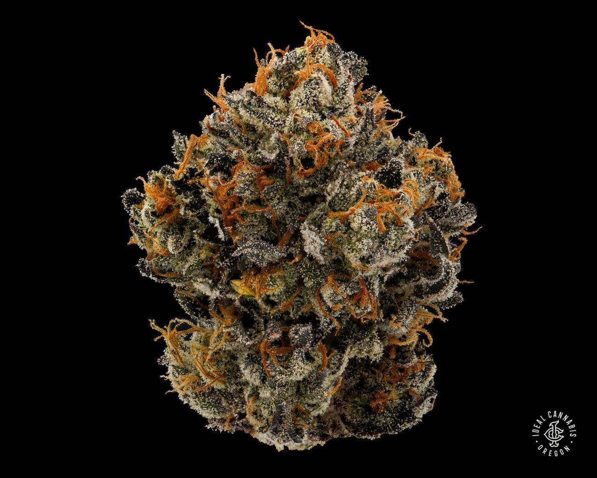
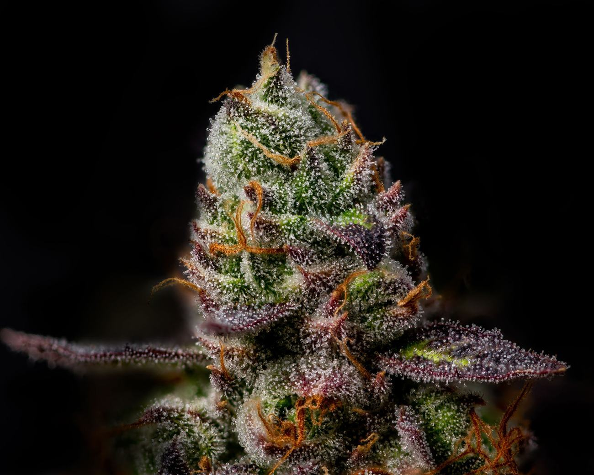
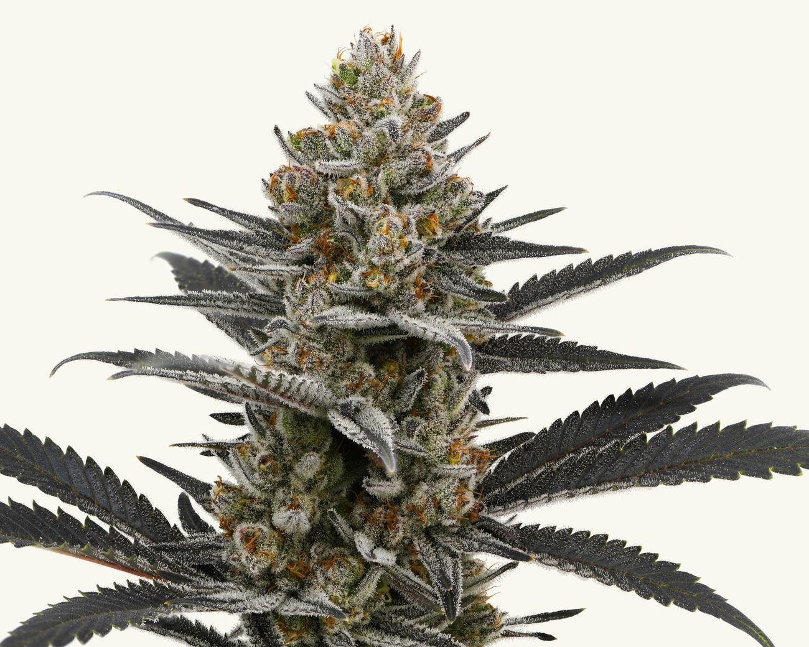
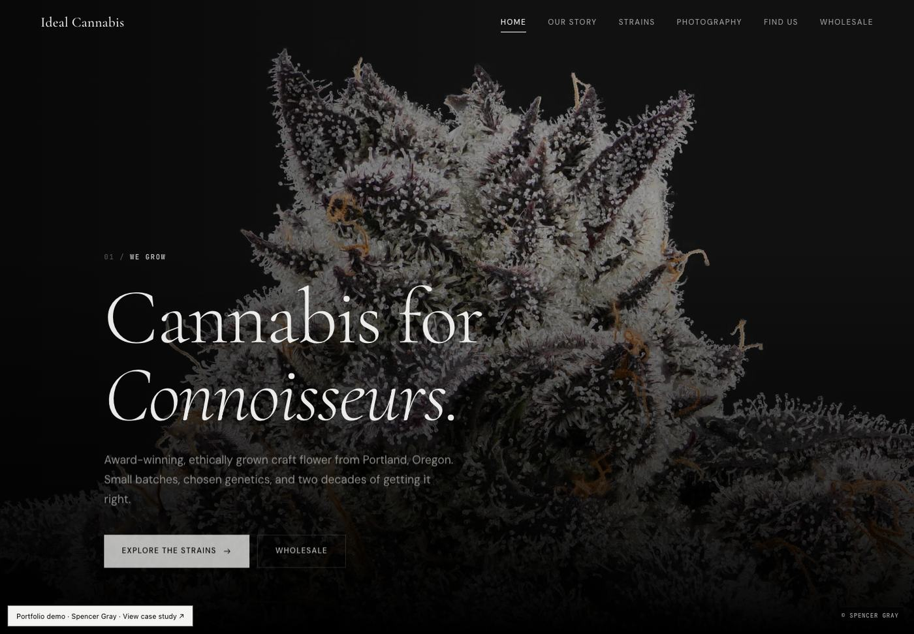
A live, responsive brand site and a working wholesale portal, both public. The photo library is built for reuse across the opening, product pages and gallery, so one shoot keeps paying off.
02Print operations & tools
My partner Noah and I had two Roland UV printers that were already paid for, in a building that charged us no rent. Nobody was running them.
Free machines still need an operating system.
There was no trained operator, no job costing, no prepress standard and no file system. Client artwork arrived by email, usually close to print-ready and usually missing the CutContour cut line, with stray clipping masks and compound paths to clean up. Every job meant new decisions about stock, white ink, cost and where the files lived.
I put in 10 to 20 hours a week at the press and wrote a four-phase roadmap. Each phase has an exit gate, so we only move on when the numbers say we can.
One press, real jobs, drills and a numbers card. Exit exam before moving on.
Prepress run sheet, job flow and RIP setup. Exit gate: Noah runs a job unaided.
Demand and supply split between partners. Contribution per press hour, bottleneck diagnosis.
Commission the second LEC2 once the math works: ink fill, maintenance, staffing case.
The idle printer, the Summa D5 cutter and the flatbed stay off the menu until the first press shows its numbers. The public site lists current capabilities only.
A client-facing artwork spec covers bleed, safe area and cut lines. An internal 10-gate prepress run sheet covers everything else. Cannabis compliance stays with the brand, so the spec stays a pure print document.
YYMM-NN job numbers, one folder structure, template emails for proofs and approvals. Noah sees proofs and status; working files stay in prepress.
Clients buy a shelf-ready label system in Core, Premium, Launch Kit and Drop Edition tiers. Holographic, metallized and clear stocks are where the margin lives, so I'm qualifying each one on the press with its own settings card.
A packaging template builder that outputs an Illustrator script, an artwork checker that inspects PDFs and images locally, and an imposition tool that exports a press-ready sheet.
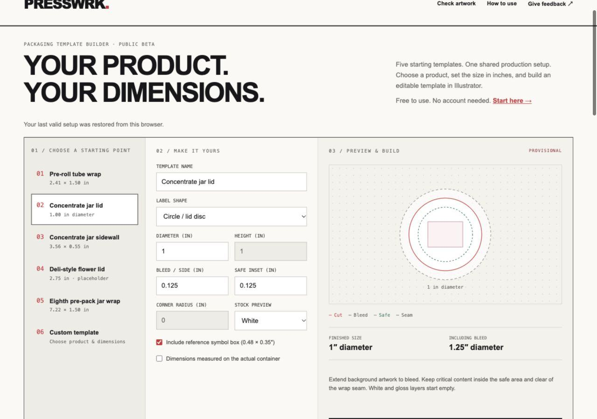
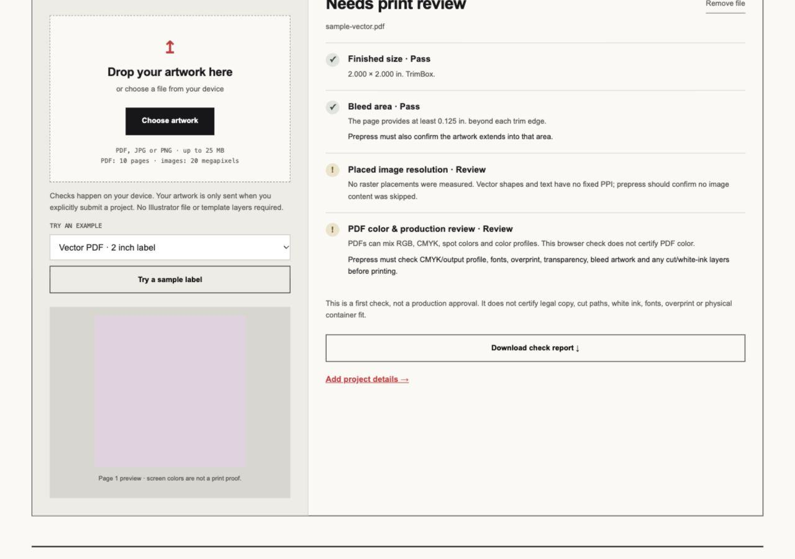
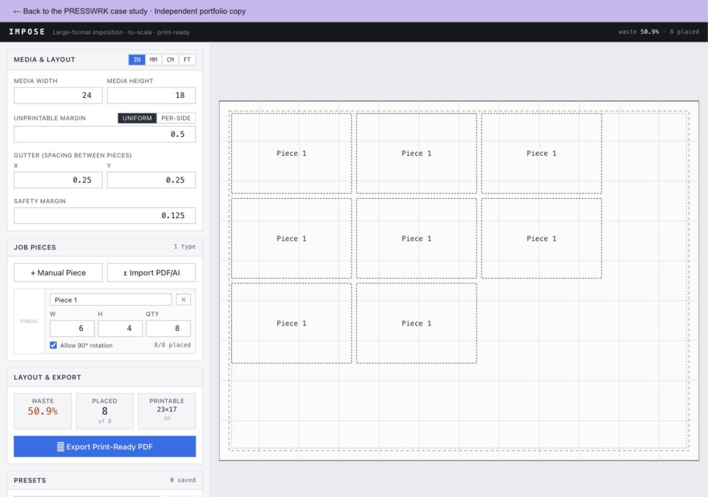
The press is billing production for cannabis jar and pre-roll tube labels, with UV DTF transfers added as a second media path. The open problem is concentration: one client account is all of current revenue. The business plan caps any account at 30% of trailing revenue, so the next phase is outreach to Portland brands.
03Workflow design across three industries
Before internal tools had a job title, I kept becoming the person who built them.
Dutch Bros · Barista
Dutch Bros piloted its drive-thru runner system at my store: a barista walks the line and takes orders before cars reach the window. We built the order shorthand on the fly and changed it shift by shift as we learned. The line moved faster, and the people at the window got time back to talk with customers.
Pilot store
Model later adopted chain-wide
Print Works · Print Production Manager · 2016–17
Sales, marketing, creative, production and accounting each tracked jobs their own way, and revisions lived in long email chains. I pitched and built a relational workflow in Podio that carried every job from signed contract to delivery. When pre-production marked a job approved, it moved into production's queue and notified the right people. File questions stayed attached to the job, and the owner got one overview with drill-down.
5 departments connected
Email revision chains retired
GoldFlower (formerly GoldLeaf) · Marketing & Ops
Information lived in people's heads and private docs. I built a cross-department company wiki in Notion that centralized documentation, streamlined communication and tracked projects and tasks in one place.
Company-wide
Docs, projects & tasks
The tool changes every time. The method stays: watch how work actually moves, find the handoff where it stalls, and give everyone the same view of it.
It's the same instinct behind PRESSWRK's job flow and the wholesale portal, at a larger scale and with better tools.
04AI product
Dispensary managers sit on more data than they can read. Point-of-sale exports are wide, technical and have no opinion about what matters this morning.
The signals are in the exports. Finding them takes an analyst's afternoon, and most stores don't have an analyst.
Margin leaks, slow movers and discount drift all show up in standard Dutchie reports. A manager needs a short list of what to act on and why, in words, before the shift starts.
The home screen separates decisions that need judgment from routine reporting, so the urgent items come first.
Operator notes explain why a number matters. Managers get better at reading the business over time.
Ask Operator answers questions about the store's data in conversation.
Running on CSV exports means a store can start today, without waiting on POS API access.
Operator Intelligence grew out of CannaMetrics, an analytics build I made covering 498 SKUs across 87 brands, with margin logic, data-quality flags, and pricing and inventory recommendations. The lesson from that build was that more charts didn't help. A clear next action did.
Live and running on demo data. The next test is a store pilot that measures whether managers reach the right call faster with the brief than without it.
05Retail data system
Most dispensary menus sort flower by THC and by indica or sativa. Neither tells a customer what a strain will smell like or how it tends to feel.
Real data · Ideal Cannabis
Grape Diamonds
| Terpene | Mass % |
|---|---|
| Myrcene | 0.79 |
| Caryophyllene | 0.19 |
| Ocimene | 0.16 |
| Linalool | 0.14 |
| Humulene | 0.07 |
| Limonene · Pinene · Terpinolene | < LOQ |
| Total terpenes | 1.70 |
From a ChemHistory certificate of analysis, July 2021. Each spoke shows that terpene's share of the total, capped at 45%.
THC-first menus push customers toward the strongest number on the shelf.
That hurts shoppers who want a particular experience, and it hurts craft farms whose flower stands out on aroma rather than potency. Budtenders end up teaching from memory, and every store says it differently.
Each batch gets a terpene fingerprint and a profile a customer can recognize by smell. A 26-terpene library sorts compounds into primary, impact and trace tiers.
Pre-rolls sort by format, carts by extract type, concentrates by texture, edibles by dose. Flower leads with aroma.
The importer reads Dutchie inventory exports and matched 37 of 37 flower rows in testing on a real store's data. A 38-check harness and COA confidence bands catch bad inputs before they print.
A Figma system with Paper and Chrome modes, 16 text styles and components from menu row to terpene card, built so the same fingerprint reads on a menu, a label, a shelf tag or a social post.
The goal is a print-ready menu in under five minutes from a store export. The importer is validated and the generator is live; time saved and staff adoption still need to be measured in a store.
06Photography
I taught myself photography and have spent the last five years between photo pits and macro rigs. The two disciplines pull in opposite directions, and each makes me better at the other.
Three songs, no flash, moving subjects and stage light that changes every bar. You learn to read the lighting cues and the performer, and you get one chance at the frame.
The opposite problem. Total control of light and time, and the patience to keep adjusting until every trichome reads. The same eye for detail runs through my brand and product work.
Drag or use the arrows
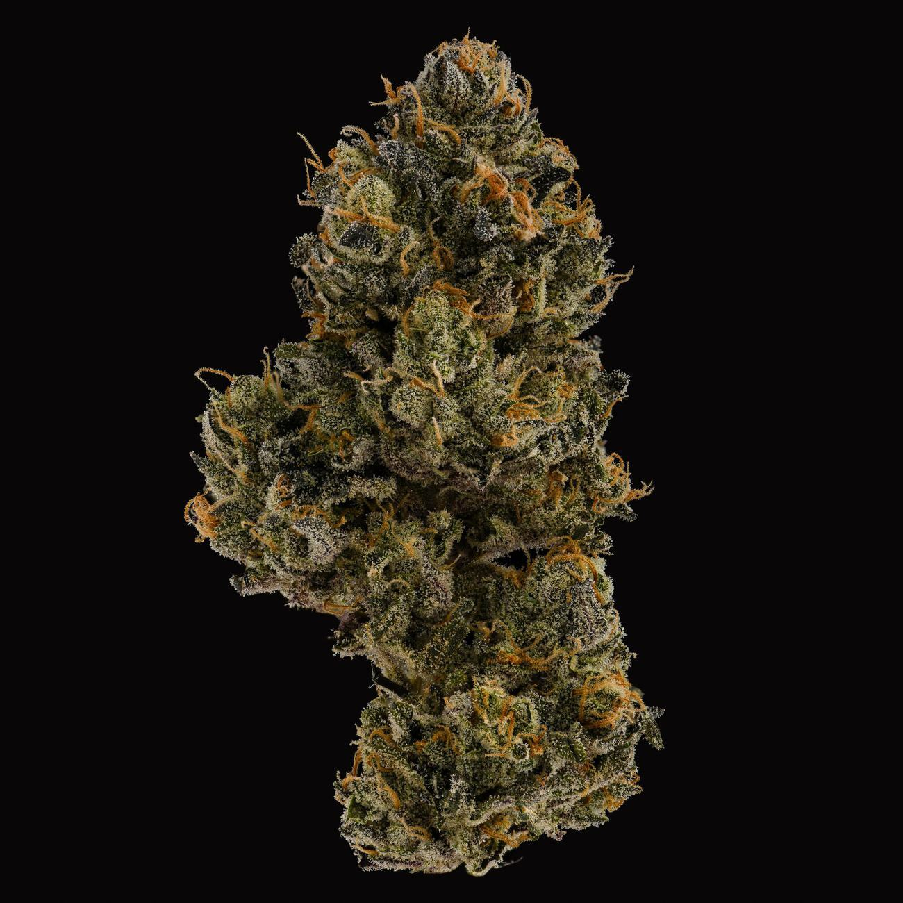
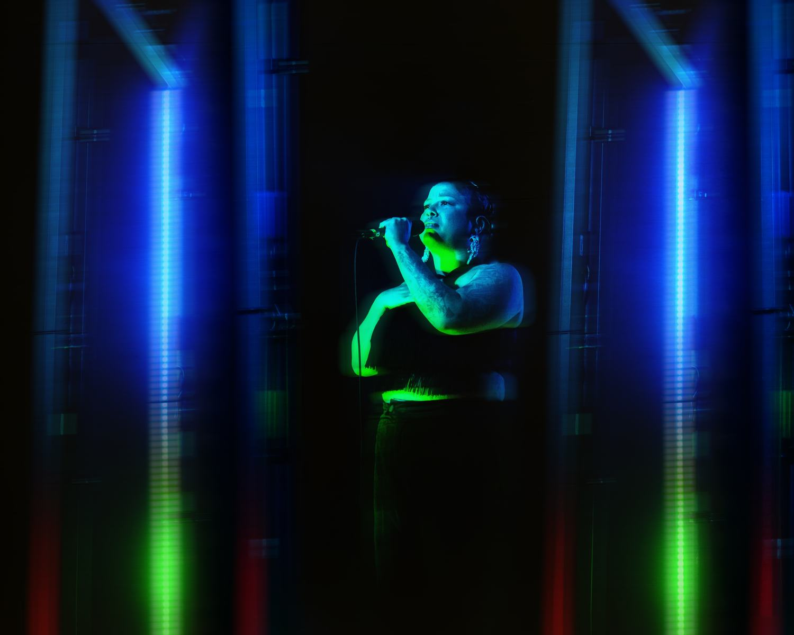
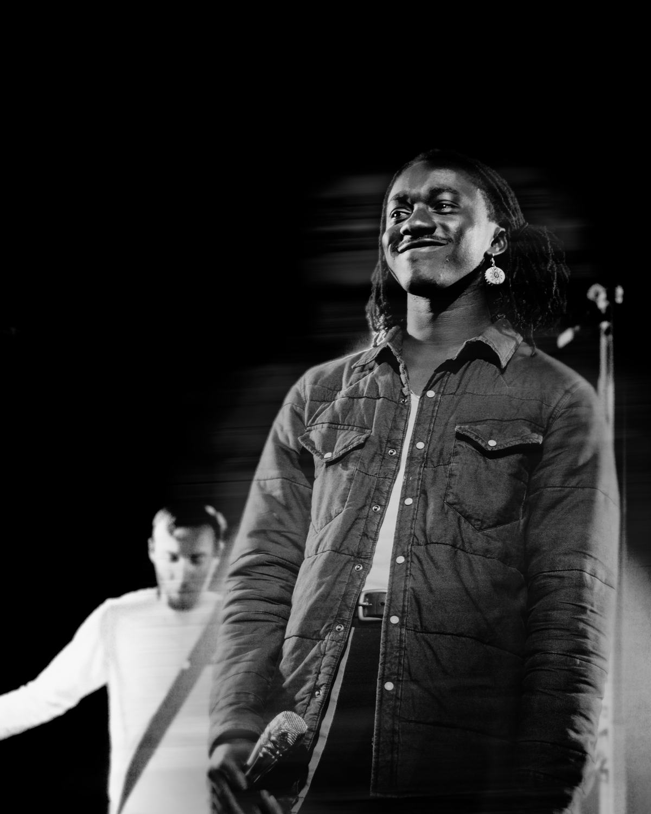
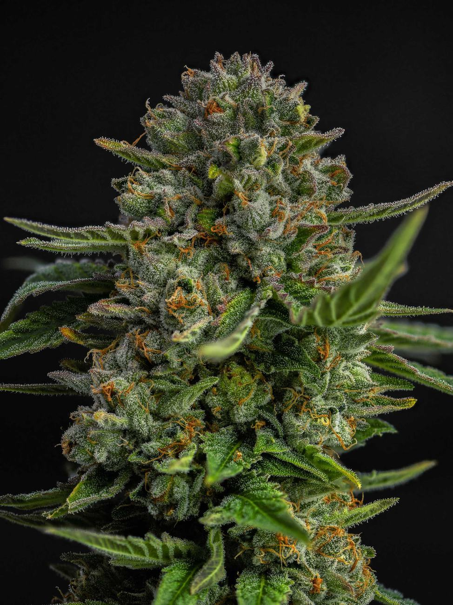
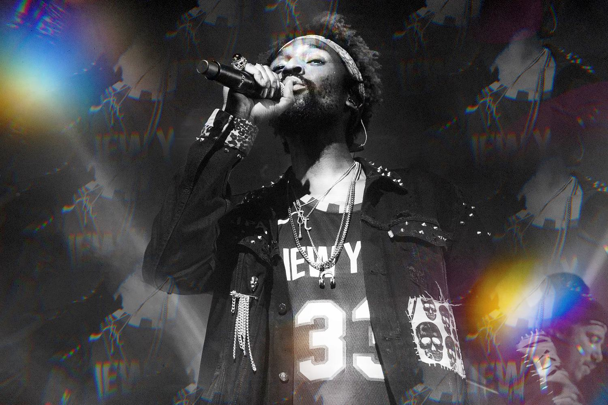
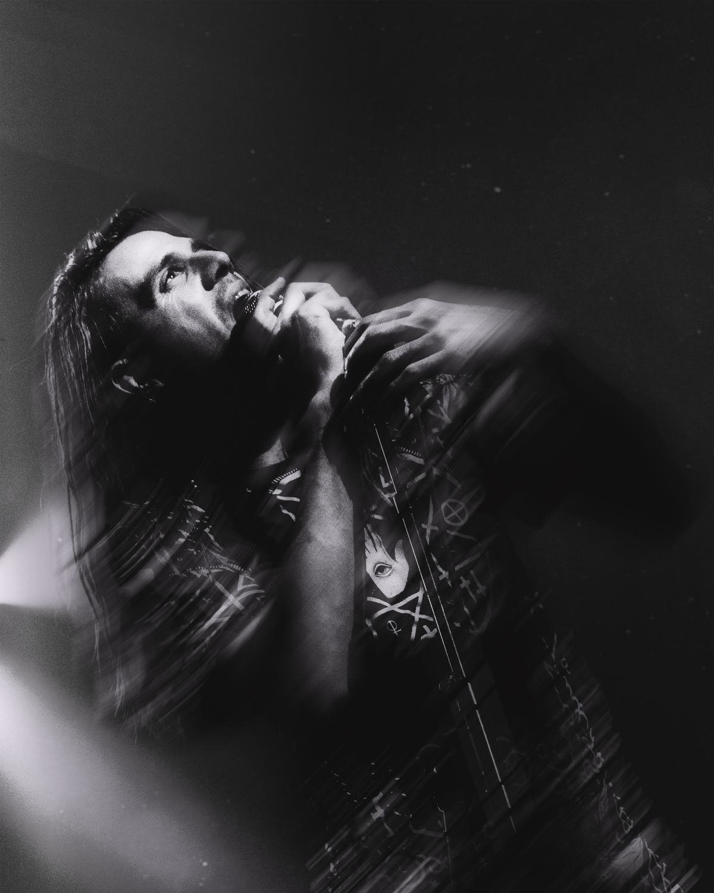
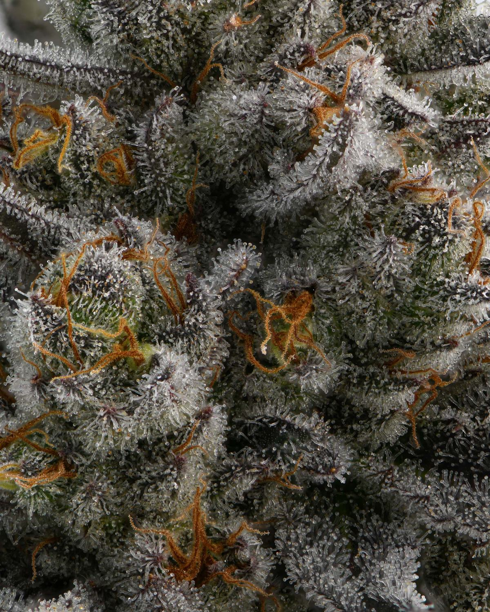
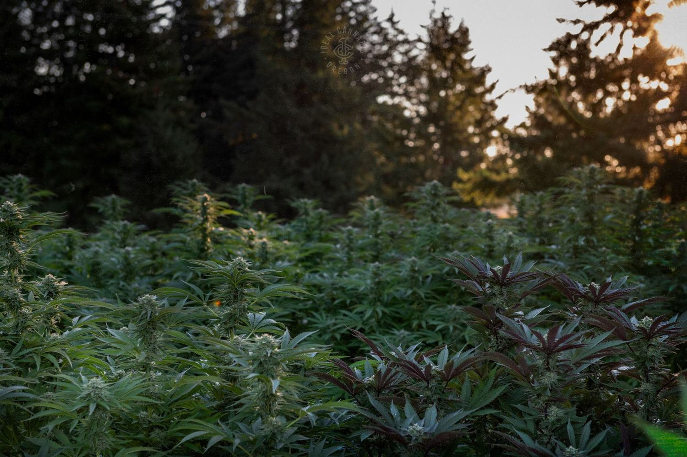
About
I'm a self-taught builder in Portland, Oregon. My work sits where brand, operations and software meet: I diagnose what's slowing a business down, then take it from research to plan to design to a working build. AI is my main force multiplier. I was one of the earliest ChatGPT users and I build with these tools every day.
I hold a BS in Marketing Management and Advertising from Portland State University and an MIT certificate, and I keep learning whatever the next job needs, whether that's a UV press, a POS data schema or a Figma plugin API.
In 2020, when wildfires took homes across Oregon, I organized a relief fundraiser with farms I'd worked with, Ideal Cannabis and Doghouse, to support the families affected.
Where I've built